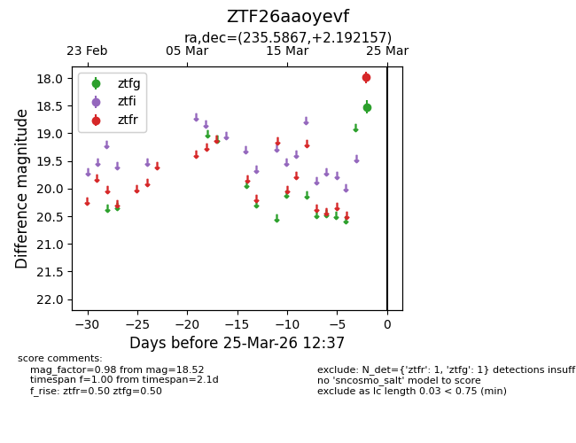
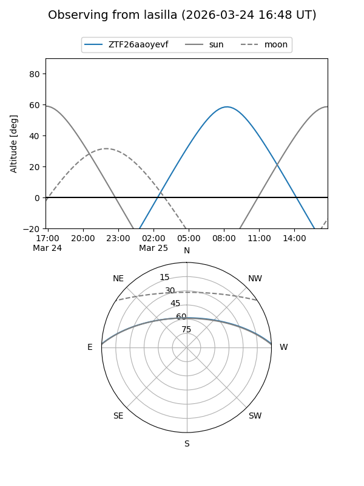
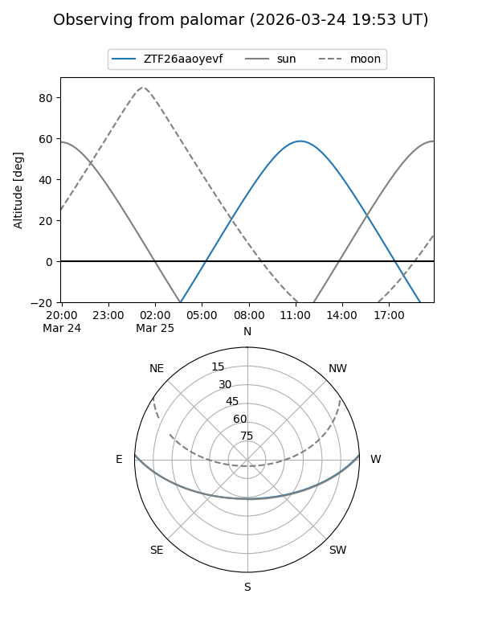

ZTF26aaoyevf
Target ZTF26aaoyevf at 2026-03-25 12:39
Aliases and brokers:
FINK: link
Lasair: link
ALeRCE: link
alt names
ZTF26aaoyevf (ztf,fink_ztf)
Coordinates:
equatorial (ra, dec) = 235.5867,+2.19216
equatorial (HMS+DMS) = 15:42:20.81,+02:11:31.77
galactic (l, b) = (9.0164,+42.12433)
Flags:
Photometry:
last ztfg=18.52, ztfr=17.99
1 ztfg, 1 ztfr detections
Lightcurve

Visibility


Additional plots